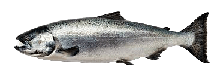

Форма тела карася продолговатая или слегка округлая, туловище рыбы
умеренно сплюснутое с боков и покрытое крупной, гладкой на ощупь
чешуей. Цвет карася в зависимости от видовой принадлежности может
принимать различные оттенки серебристого или золотистого. Спина
рыбы довольно толстая, с высоким спинным плавником. Длина карася
может достигать 50-60 см, а вес рыбы составлять более 5
килограммов. Голова рыбы небольшого размера с маленькими глазами и
ртом, в котором глоточные зубы расположены в один ряд.
Примечательной особенностью является наличие в спинном и анальных
плавниках колючих зазубренных лучей. Продолжительность жизни
зависит от вида рыбы. Обыкновенный карась живет более 12 лет.
Серебряный карась живет 8-9 лет, но существуют особи, которые
доживают и до 12 лет.
Лещ предпочитает теплую, спокойную воду с песчано-иловатым и
глинистым дном, и поэтому его можно найти в заливах рек, в озерах
и водохранилищах. Он любит места, где нет течения или оно слабое.
Правда, зимой его чаще можно встретить на небольшом течении.
Поведение леща в разных водоемах сильно различается. Например, в
неглубоких озерах он постоянно обитает в чаще водных растений и
питается преимущественно ночью, в водохранилищах — придерживается
кромки водных растений и кормится на утренних и вечерних зорях, а
в реках — располагается в глубоких ямах, около коряг, завалов,
обрывистых берегов или вблизи каменистых и песчаных отмелей. На
глубоких местах он, как правило, питается в течение всего дня, а
на мелководья выходит на зорях, играет у поверхности воды,
высовываясь из нее, или бесшумно «разводит круги».

По мнению многих ученых, прямые предки современных лососевых
появились в меловой период мезозойской эры, то есть порядка 145
миллинов лет назад. Они же и стали предками современных костистых
рыб. Так, в наше время формы лососеобразных рыб так близки к
сельдеобразным, что некоторые классификаторы объединяют их в
единый отряд. Семейство лососевых включает в себя более 170 видов
рыб, самые маленькие из которых имеют длину 13 см, а самые большие
могут достигать 2 метров. Наиболее известные у нас представители
семейства лососевых – горбуша, кижуч, нерка, палия и кета.
Тихоокеанские лососи хоть и «не благородны», но очень вкусны.
Важность этой рыбы для народов Сибири, Камчатки и Дальнего Востока
трудно переоценить. Например, у камчадалов рыбный сезон даже имел
свой календарь: летние месяцы называли по породам рыб, идущих на
нерест. В мае-июне первой вылавливали чавычу, в июле начинался
массовый лов горбуши; в августе–сентябре шел лов самых важных
промысловых рыб – кеты и кижуча. А палию в России стали разводить
на острове Валаам еще с 1886 года и выпускали в Ладогу ежегодно
около 100 тысяч мальков этой рыбы. Об этом было написано в
«Вестнике рыбопромышленности» №10 в 1898 году.